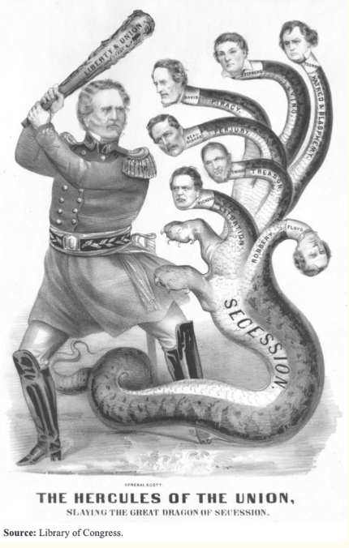
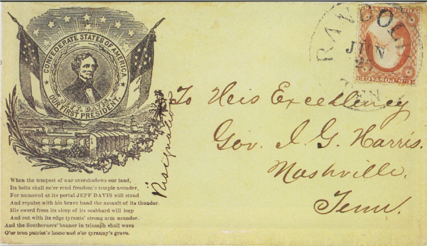

Primary Source:
The American Hercules
The American Hercules is a political cartoon by Currier & Ives made in 1861 as a depiction of 19th century America’s arguably most important general, General Winfield Scott.
Winfield Scott remains the longest-serving officer in US history, and was a war hero during the War of 1812 who rose up to the rank of general over the course of several decades. He was favored by various presidents for his efforts to reform and progress the military, most notably by Andrew Jackson, and was finally appointed the position of commanding general by Martin Van Buren in 1841.
However, by the time the Civil War commenced Scott had become old, and infirm, and recognized himself as incapable of acting as an effective field general during the war. Instead, he attempted to name Robert E. Lee as the commanding officer of the army to put down the rebellion, only for Lee to decline the offer as Virginia would secede 2 days later, with Lee ironically later assuming command of the Confederate army. After a series of setbacks, Major General George B. McClellan assumed command, and Scott retired after various disagreements with McClellan.
Though he was a crucial advisor to Lincoln during the course of the war, he never assumed command of Union forces, or played a direct role as commander during any major battle.
The American Hercules is not a depiction of Scott during the civil war, instead relying on his likeness several decades prior, standing taller, thinner, and much younger than he was in 1861. The actual action depicted is of Scott as a timeless hero, boldly slaying the dreaded hydra of rebel forces. This piece shows a critical aspect of the messages expressed in both Confederate and Union propaganda during the war - rather than outright lying, a comfortable version of the truth is presented, specifically for the cause of the war. Pieces such as these were handcrafted for newspapers and pamphlets to reassure a terrified and wary American public that their war heroes could be trusted to save the Union, regardless of the actual circumstances those supposed heroes were truly in.
Secondary Primary Source:
Confederate Envelope
Examples of Confederate Civil War propaganda are significantly less numerous in historical records compared to their Union counterparts, as the Confederacy’s comparably smaller unified newspapers and propaganda distribution methods resulted in less preservation.
One of the best representations of their propaganda can be seen in the envelopes used to relay messages, as these often served as the base for the propaganda pamphlets used by both sides to flood the country with their narrative of the war.
This unnamed envelope shows a declaration by Confederate President Jefferson Davis, a declaration that rhetorically resonates with the “War of Northern Aggression” myth so common in Civil War misinformation today. The envelope serves as powerful propaganda not in what it says, but in what it omits, refusing to acknowledge the attempted preservation of slavery that was so central to the seceding states, instead only declaring a steadfast resolution to protect the confederacy and its people, in pursuit, ironically, of freedom.
Notably, most other works of civil war propaganda seen in these envelopes show a similar pattern of erasing slavery, with pro-Union works focusing on the rhetoric of preserving the United States and bringing traitors to justice, and pro-Confederate works focusing on the rhetoric of protecting their homeland from Union aggressors. Of over 10,000 recorded designs, only about 80 were known to depict African Americans at all. Patterns such as these can give powerful clues for why narratives such as that of “States Rights” remain so powerful even today.